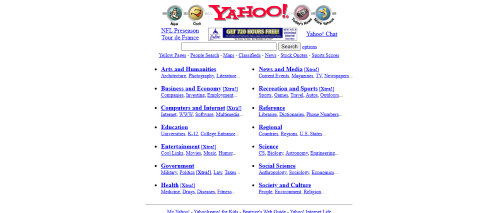
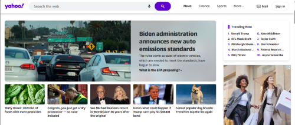

How The Internet Works
Introduction
Have you ever wondered how the Internet works? We all know how important it is in our daily lives, from ordering food to chatting with friends, the internet has made everything easier and faster.
The internet is a useful tool full of information, some believe it is magic, some believe it comes from satellites, and some have never stopped to think how we all are connected. In fact, we cannot live in a world without the Internet. Such an important thing as the internet, we need to know more about it. So, this article covers the brief history of the internet and how the internet works. This article begins with the beginning of the Internet, then explains how the Internet and websites work, and finishes by comparing old to modern websites.
The Brief History of the Internet
The birth of the internet was around the 1950's. It was during the Cold War time that the concept of communication networks was introduced. The idea was to create a system that could connect different computers and allow them to exchange information. Back then, the army noticed a sensible problem with data and emphasized the importance of sharing data across multiple devices within the United States military. So, if a military base were attacked and a base containing stored information was destroyed, they could recover all the data lost.
In the 1960s, the ARPA (Advanced Research Projects Agency), which is a division of the United States Department of Defense, developed a network called ARPANET that shares resources from computers using packet switching. The ARPANET's original objective was to link computers in various places, which was achieved in 1969 (Mears, 2022). For the Internet to work properly, the devices that use the Internet must “speak” in the same language. This connection is possible by the IP, which stands for Internet Protocol.
Over the next few decades, the internet continued to evolve and grow. In the 1980s, the World Wide Web was developed by Tim Berners-Lee, which allowed users to access and share information through a graphical interface.
On the W3 Website, Tim Berners-Lee stated that sharing information was difficult, and that was necessary to log on to different computers to obtain and understand one piece of information (Answers for young people - Tim Berners-Lee, no date). So, he developed the WWW (World Wide Web) and the HTML (Hypertext Markup Language). With the development of the WWW people and organizations can share information effortlessly.
The World Wide Web is a complex system comprised of various technologies and protocols that work together and allow the user to have all the information on a single website page. You do not have to use different programs to check your e-mail for example.
After that, the internet grew a lot, and many technologies were born, such as CSS and JavaScript. Today, the internet is an essential part of our lives. We use it for work, entertainment, communication, and so much more. It is hard to imagine a world without it.
How Does the Internet Work?
For most of us, the Internet is virtual, we connect our device to a wi-fi connection, and then we share photos on social media, watch videos, or text our friends. But the Internet is also a physical thing. Connectivity networks are built with three distinct layers of providers: first mile, middle mile, and last mile ("Barriers to Investing in Last-Mile Connectivity", U.S. Agency for International Development, 2022). The last mile is the segment of the network that connects the end-user to the internet service provider's (ISP) point of presence.
When we send data over the internet, it is broken down into manageable packets. Since computers can only understand the binary language, each packet is converted into bytes and then wrapped like a letter in an envelope, each envelope gets a header, which is information about where it is from and where it is going and other instructions. More specifically, the information of where it is from is the IP of the device that sends the data, and where it is going is the IP of the destination device. These envelopes are transported by radio waves to the router and go to the middle mile.
By the time the data leaves the local network, it connects to the internet hubs (ISP), which serves as a gateway between the local network to the broader Internet. The ISP then takes the data and sends it onto the internet highway, which is made up of lots of different roads (networks) that connect all over the world.
Those internet providers are like huge computers connected by cables and storing all the information on the internet. Once the message reaches the destination's ISP. It then goes to the last mile.
In the last mile, the ISP seeks the destination device's IP address and sends the data to the device. The device will receive all those envelopes containing the bytes and the header. They are reassembled into the original data stream based on the sequence numbers and other information contained in the packet headers.
When data needs to travel between continents, ISPs send it through centers that manage the undersea cables that connect continents. These centers act as crucial hubs for global data transmission, ensuring that information can cross oceans fast and reach its destination in another country.
How The Web Works
When you turn on your laptop, open the browser, and enter a URL, a lot happens behind the scenes to display everything on your screen. All the visual content and user interaction are managed by what we call, a client-server model. Although it may seem simple, there is a complex system working under the hood.
Before diving into how the web works, we need to get an idea about the Web Architecture. Shortly and straightforwardly, a web is divided into 2 parts, Client-Side and Server-Side. It is important to remember that the Internet and the Web are 2 different things, the Internet is the infrastructure that enables computers to connect and communicate, while the Web is the software layer that enables access to information through the Internet (FourZeroThree, 2021).
The client-server model is a model where the client side requests resources from the server side. These resources may include HTML documents, CSS files, JavaScript files, images, videos, and more.
It begins when a user initiates a request for a specific web page by entering a URL (Uniform Resource Locator) or clicking on a link. When the user does that, the computer takes this URL and requests a copy of the web page from the server. One of the most common ways to get webpages is by the HTTP (HiperText Transfer Protocol) protocol. Protocols are like a conversation, and the HTTP is based on requests and responses and the work is centralized on the server side. There are other protocols, such as P2P, FTP, BitTorrent, SMTP, and more. But HTTP is the most common on the Web. HTTPS is the same protocol but with a layer of security for the users.
HTTP servers are stateless, meaning they do not remember previous requests. This implies that users must continually prove their identity to the server, like showing an ID each time. One way to do this is by sending a token with each request. Methods to remind the server of previous interactions include sessions and cookies. Sessions involve generating and continuously presenting a token to the server, while cookies store information on the client side for the server to recall later.
A URL is a standardized address used to specify the location of a resource on the internet. First, the URL needs the Scheme, which is the protocol of the URL. A computer needs an IP address to access a website. Instead of memorizing IPs, we have Domain Name System (DNS) servers. These servers translate user-friendly domain names into IP addresses so users can access websites by typing in the domain name. DNS acts as a directory of IP addresses associated with domain names.
When a user enters a domain into their browser, the user's network sends the DNS request to a configured local DNS server, often provided by the ISP. The local DNS checks its cache for the requested domain, if it is found, it returns the associated IP immediately. Otherwise, the local DNS queries root DNS servers, which contain info about TLDs, such as .com, .org, .net. After that, the root DNS sends the IP address of the website to the local DNS, which stores it in its cache.
With the IP address, the browser connects to the web server or service associated with the domain and starts a client-model conversation. Each website, system, or company has its domain, where everything is controlled.
New Websites versus Old Websites
Elderly websites are simplistic with limited graphics and basic features, while modern websites boast sophisticated design aesthetics, interactive features, intuitive navigation systems, mobile compatibility, and accessibility features. The evolution in web design reflects shifting user preferences towards engaging and immersive digital experiences that prioritize performance optimization and inclusive design practices.
Yahoo - 1997
Yahoo - 2024
Conclusion
The internet has evolved a lot since its Cold War origins. From a military information-sharing tool, it has become an amazing part of our daily lives. Whether we are chatting with friends, watching videos, or shopping online, the internet makes our lives easier and more fun. Terms like cloud or virtual, are just fancy terms to merchandising the computer world, the way data travels around the world is physical, and there are kilometers of cables undersea connecting the world! Plus, websites have come a long way in terms of looks and usability. Remember those old-school sites? Nowadays, websites and applications are more interactive, colorful, and animated. But for a long time, they were made to just show data.
Bibliography